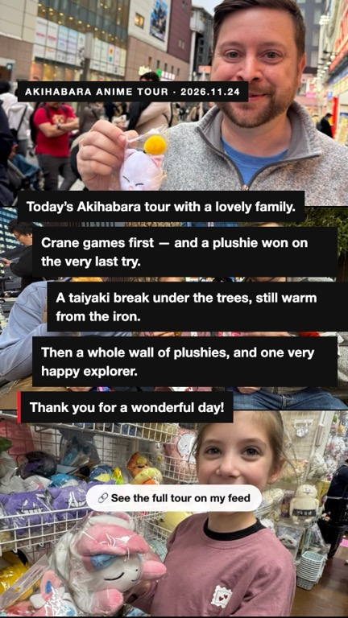
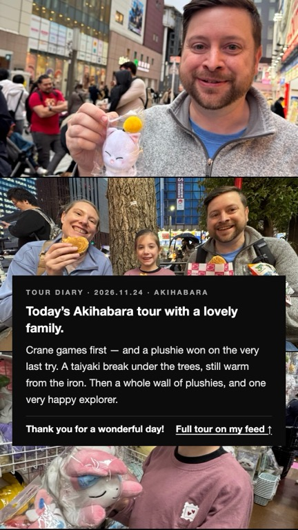
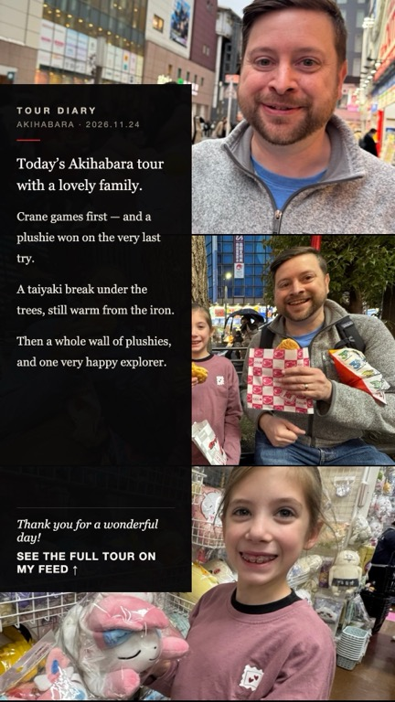
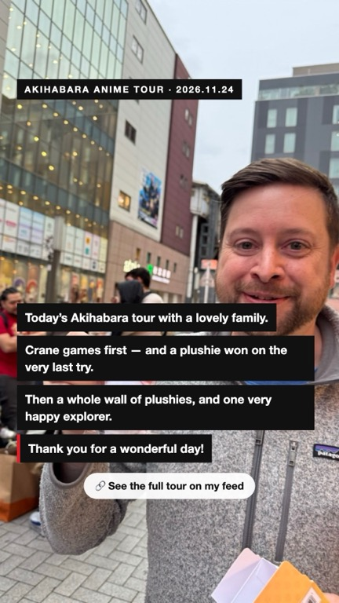
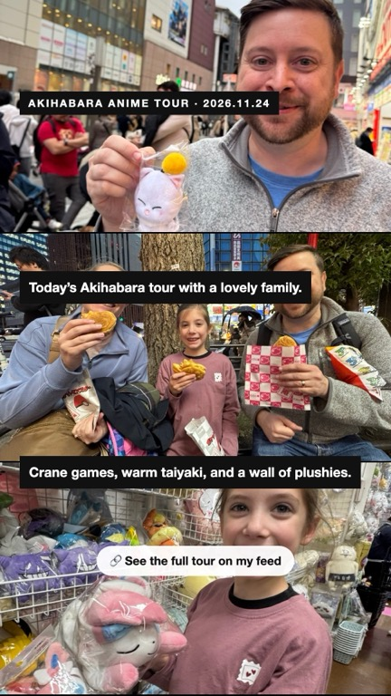

写真の上に黒いテキストボックスを重ねて、ツアーの短い物語（英語・5文）を載せる装丁の5案です。全案とも Jennifer West 回の実写真、配置は IG ストーリーのセーフゾーン（上のヘッダー帯・下の入力欄帯を回避）前提で作っています。文面にゲストの個人名・年齢は入れていません。画像タップで実寸（1080×1920）が開きます。

一文ずつ黒ボックスに分け、少しずつずらして段々に重ねる。余白と段差でリズムを作り、お礼の行だけ赤いバーを添えて締める。参考の文法に一番近い正統派。

文はバラさず、1つの大きな黒パネルに「日記」としてまとめて下部に置く。日付の見出し＋本文＋お礼とリンクを同じ面に収め、写真は上でのびのび見せる。

左に黒いコラム面を作り、セリフ体で物語を縦に流す。赤い罫と見出しで雑誌の読み物ページのような編集感。写真は右の帯として流れる。

コラージュをやめ、いちばん良い写真を1枚だけ全画面に。その上に文のボックスを重ねる。写真の力で見せる分、文は1行省いて軽くしてある。

物語を2行まで圧縮した最小版。黒ボックスは2つだけ、写真が主役で文は添えるだけ。情報量より空気感を優先するならこれ。
共通の文面（案5のみ短縮版）：“Today’s Akihabara tour with a lovely family. Crane games first — and a plushie won on the very last try. A taiyaki break under the trees, still warm from the iron. Then a whole wall of plushies, and one very happy explorer. Thank you for a wonderful day!” ＋ 下部にフィードへのリンク導線。